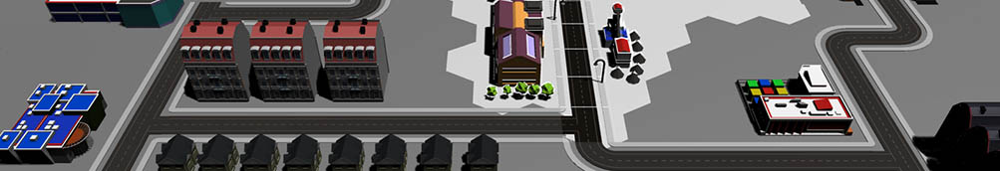

For a university assignment I was tasked to concept, pitch, and design a game within a group of four. In our initial concept phase we came up with three original ideas based on a randomly generated briefs and pitched them to the class, with the class voting on and ultimately deciding which we continued further with.
Our three concepts were: "Glorious Propaganda Simulator" (a top down strategy game where a player gains political control to win), "The Unlikely Heist" (a mobile game where you directed an unpredictable AI around a maze), and "Extinction Escape" (a 2.5d game where you play as dinosaurs racing to get to a rocket to escape Earth).
We ultimately ended up continuing with Glorious Propaganda Simulator due to the class' vote, and subsequently produced design documentation for the project and also a prototype demo within Unity to sell the game concept further. After creating these, we held another presentation where we attempted to "greenlight" the game concept to our module leader.
Our concept and final presentation for Glorious Propaganda Simulator was an overwhelming success with a greenlight from our module leader and positive feedback from the class about the game's potential. The project's documentation, presentation and demo all featured a consistant art style which I was in charge of, this recieved bonus praise as any element of work we produced was easily identifiable to the game project through typography and colour scheme matching.
The documentation for the project and both presentations can be viewed below.